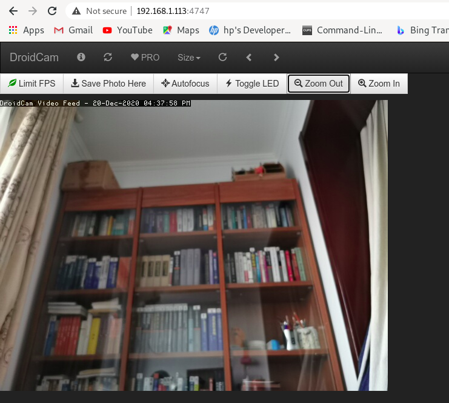

手机摄像头让计算机使用 - Droidcam
目录
笔记本前置摄像头不够清晰，找了一个可以把手机摄像头给笔记本使用的方式Droidcam。
Debian上安装Droidcam:
wget https://files.dev47apps.net/linux/droidcam_latest.zip unzip droidcam_latest.zip -d droidcam cd droidcam && sudo ./install-client sudo ./install-video sudo ./install-sound
会有模块插入到内核：
yanyg@t430:~$ lsmod | grep v4l2loopback v4l2loopback_dc 28672 0 videodev 212992 4 videobuf2_v4l2,v4l2loopback_dc,uvcvideo,videobuf2_common
参考页面：https://www.dev47apps.com/droidcam/linux/
终端运行droidcam:
yanyg@t430:~$ droidcam
在图形界面下可以填写ip/port。
在手机侧安装droidcam，GooglePlay和AppStore上都有。华为很难找到合适的版本，Dev47apps不提供下载链接。搜索到了一个APK安装测试有效。apkpure被GFW不方便，保存到gitee： https://gitee.com/yanyonggang/misc/blob/master/apks/droidcam-v6.7.7-apkpure.com.apk
安装后在手机侧启动，在浏览器确认是否正常。假设IP 192.168.1.113，访问 http://192.168.1.113:4747/: 
视频清晰度不错，延时有些大。可以用废弃手机做个端，把这个port映射出去，到处都能访问，当作监控用。